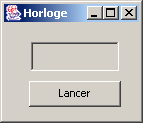
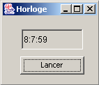
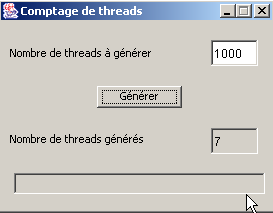
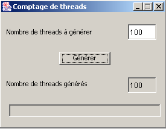

7. Execution Threads
7.1. Introduction
When an application is launched, it runs in an execution flow called a thread. The class modeling a thread is the java.lang.Thread class, which has the following properties and methods:
returns the thread currently running | |
sets the name of the thread | |
thread name | |
indicates whether the thread is active (true) or not (false) | |
starts the execution of a thread | |
method executed automatically after the preceding start method has been executed | |
pauses the execution of a thread for n milliseconds | |
blocking operation—waits for the thread to finish before proceeding to the next instruction |
The most commonly used constructors are as follows:
creates a reference to an asynchronous task. This task is still inactive. The created task must have a run method: most often, a class derived from Thread will be used. | |
Same as above, but the Runnable object passed as a parameter implements the run method. |
Let’s look at a simple application demonstrating the existence of a main execution thread—the one in which a class’s main function runs:
// use of threads
import java.io.*;
import java.util.*;
public class thread1{
public static void main(String[] arg)throws Exception {
// init current thread
Thread main=Thread.currentThread();
// display
System.out.println("Thread courant : " + main.getName());
// we change the name
main.setName("myMainThread");
// check
System.out.println("Thread courant : " + main.getName());
// infinite loop
while(true){
// time recovery
Calendar calendrier=Calendar.getInstance();
String H=calendrier.get(Calendar.HOUR_OF_DAY)+":"
+calendrier.get(Calendar.MINUTE)+":"
+calendrier.get(Calendar.SECOND);
// display
System.out.println(main.getName() + " : " +H);
// temporary shutdown
Thread.sleep(1000);
}//while
}//hand
}//class
Screen output:
Thread courant : main
Thread courant : myMainThread
myMainThread : 15:34:9
myMainThread : 15:34:10
myMainThread : 15:34:11
myMainThread : 15:34:12
Terminer le programme de commandes (O/N) ? o
The previous example illustrates the following points:
- the main function runs correctly in a thread
- we can access this thread's properties via Thread.currentThread()
- the role of the sleep method. Here, the thread executing main sleeps for 1 second between each display.
7.2. Creating execution threads
It is possible to have applications where pieces of code run "simultaneously" in different execution threads. When we say that threads execute simultaneously, we are often using the term loosely. If the machine has only one processor, as is still often the case, the threads share this processor: they each have access to it, in turn, for a brief moment (a few milliseconds). This is what creates the illusion of parallel execution. The amount of time allocated to a thread depends on various factors, including its priority, which has a default value but can also be set programmatically. When a thread has the processor, it normally uses it for the entire time allotted to it. However, it can release it early:
- by waiting for an event (wait, join)
- by sleeping for a specified period of time (sleep)
- A thread T can be created in various ways
- by deriving from the Thread class and redefining its run method.
- by implementing the Runnable interface in a class and using the new Thread(Runnable) constructor. Runnable is an interface that defines only one method: public void run(). The argument of the above constructor is therefore any class instance that implements this run method.
In the following example, threads are created using an anonymous class that extends the Thread class:
The run method here simply calls the display method.
- The execution of thread T is initiated by T.start(): this method belongs to the Thread class and performs a number of initializations before automatically invoking the run method of the Thread or the Runnable interface. The program executing the T.start() statement does not wait for task T to finish: it immediately moves on to the next statement. We then have two tasks running in parallel. They often need to communicate with each other to know the status of the shared work to be performed. This is the problem of thread synchronization.
- Once launched, the thread runs autonomously. It will stop when the run function it is executing has finished its work.
- We can wait for the end of Thread T’s execution using T.join(). This is a blocking instruction: the program executing it is blocked until task T has finished its work. It is also a means of synchronization.
Let’s examine the following program:
// use of threads
import java.io.*;
import java.util.*;
public class thread2{
public static void main(String[] arg) {
// init current thread
Thread main=Thread.currentThread();
// give a name to the current thread
main.setName("myMainThread");
// start of hand
System.out.println("début du thread " +main.getName());
// creation of execution threads
Thread[] tâches=new Thread[5];
for(int i=0;i<tâches.length;i++){
// create thread i
tâches[i]=new Thread() {
public void run() {
affiche();
}
};//def tasks[i]
// set the thread name
tâches[i].setName(""+i);
// start execution of thread i
tâches[i].start();
}//for
// end of hand
System.out.println("fin du thread " +main.getName());
}//Main
public static void affiche() {
// time recovery
Calendar calendrier=Calendar.getInstance();
String H=calendrier.get(Calendar.HOUR_OF_DAY)+":"
+calendrier.get(Calendar.MINUTE)+":"
+calendrier.get(Calendar.SECOND);
// display start of execution
System.out.println("Début d'exécution de la méthode affiche dans le Thread " +
Thread.currentThread().getName()+ " : " + H);
// sleep for 1 s
try{
Thread.sleep(1000);
}catch (Exception ex){}
// time recovery
calendrier=Calendar.getInstance();
H=calendrier.get(Calendar.HOUR_OF_DAY)+":"
+calendrier.get(Calendar.MINUTE)+":"
+calendrier.get(Calendar.SECOND);
// display end of run
System.out.println("Fin d'exécution de la méthode affiche dans le Thread "
+Thread.currentThread().getName()+ " : " + H);
}// poster
}//class
The main thread, which executes the main function, creates 5 other threads responsible for executing the static display method. The results are as follows:
début du thread myMainThread
Début d'execution of the display method in Thread 0: 15:48:3
fin du thread myMainThread
Début d'execution of the display method in Thread 1: 15:48:3
Début d'execution of the display method in Thread 2: 15:48:3
Début d'execution of the display method in Thread 3: 15:48:3
Début d'execution of the display method in Thread 4: 15:48:3
Fin d'execution of the display method in Thread 0: 15:48:4
Fin d'execution of the display method in Thread 1: 15:48:4
Fin d'execution of the display method in Thread 2: 15:48:4
Fin d'execution of the display method in Thread 3: 15:48:4
Fin d'execution of the display method in Thread 4: 15:48:4
These results are very informative:
- First, we see that starting a thread’s execution is not blocking. The main method started the execution of 5 threads in parallel and finished executing before they did. The operation
starts the execution of the thread tâches[i], but once this is done, execution immediately continues with the next statement without waiting for the thread to finish.
- All created threads must execute the display method. The order of execution is unpredictable. Even though in the example, the order of execution appears to follow the order in which the threads were launched, no general conclusions can be drawn from this. The operating system here has 6 threads and one processor. It will allocate the processor to these 6 threads according to its own rules.
- The results show an effect of the `sleep` method. In the example, thread 0 is the first to execute the `display` method. The "Start of execution" message is displayed, then it executes the `sleep` method, which suspends it for 1 second. It then loses the processor, which becomes available to another thread. The example shows that thread 1 will obtain it. Thread 1 will follow the same path as the other threads. When the 1-second sleep period for thread 0 ends, its execution can resume. The system grants it the processor, and it can complete the execution of the display method.
Let’s modify our program to end the *main* method with the following instructions:
// end of hand
System.out.println("fin du thread " +main.getName());
// application shutdown
System.exit(0);
Running the new program produces:
début du thread myMainThread
Début d'execution of the display method in Thread 0: 16:5:45
Début d'execution of the display method in Thread 1: 16:5:45
Début d'execution of the display method in Thread 2: 16:5:45
Début d'execution of the display method in Thread 3: 16:5:45
fin du thread myMainThread
Début d'execution of the display method in Thread 4: 16:5:45
As soon as the main method executes the statement:
it stops all application threads, not just the main thread. The main method might want to wait for the threads it created to finish executing before terminating itself. This can be done using the join method of the Thread class:
// waiting for all threads
for(int i=0;i<tâches.length;i++){
// we wait for thread i
tâches[i].join();
}//for
// end of hand
System.out.println("fin du thread " +main.getName());
// application shutdown
System.exit(0);
This produces the following results:
début du thread myMainThread
Début d'execution of the display method in Thread 0: 16:11:9
Début d'execution of the display method in Thread 1: 16:11:9
Début d'execution of the display method in Thread 2: 16:11:9
Début d'execution of the display method in Thread 3: 16:11:9
Début d'execution of the display method in Thread 4: 16:11:9
Fin d'execution of the display method in Thread 0: 16:11:10
Fin d'execution of the display method in Thread 1: 16:11:10
Fin d'execution of the display method in Thread 2: 16:11:10
Fin d'execution of the affiche method in Thread 3: 16:11:10
Fin d'execution of the display method in Thread 4: 16:11:10
fin du thread myMainThread
7.3. Benefits of threads
Now that we have highlighted the existence of a default thread—the one that executes the Main method—and we know how to create others, let’s consider the benefits of threads for us and why we are presenting them here. There is a type of application that lends itself well to the use of threads: client-server Internet applications. In such an application, a server located on machine S1 responds to requests from clients located on remote machines C1, C2, ..., Cn.

We use Internet applications that follow this pattern every day: web services, email, forum browsing, file transfer... In the diagram above, server S1 must serve the clients clients simultaneously. If we take the example of a FTP (File Transfer Protocol) server that delivers files to its clients clients, we know that a file transfer can sometimes take several hours. It is, of course, out of the question for a single client to monopolize the server for such a long period. What is usually done is that the server creates as many execution threads as there are clients clients. Each thread is then responsible for handling a specific client. Since the processor is cyclically shared among all active threads on the machine, the server spends a little time with each client, thereby ensuring the concurrency of the service.

7.4. A graphical clock
Consider the following application that displays a window with a clock and a button to stop or restart the clock:
 |  |  |
For the clock to function, a process must update the time every second. At the same time, events occurring in the window must be monitored: when the user clicks the "Stop" button, the clock must be stopped. Here we have two parallel and asynchronous tasks: the user can click at any time.
Consider the moment when the clock has not yet been started and the user clicks the "Start" button. This is a classic event, and one might think that a method of the thread in which the window is running could then manage the clock. However, when a method of the graphical application is executing, its thread is no longer listening for GUI events. These events occur and are placed in a queue to be processed by the application once the currently executing method has finished. In our clock example, the method will always be running since only clicking the "Stop" button can stop it. However, this event will not be processed until the method is finished. We’re going in circles.
The solution to this problem would be that when the user clicks the "Run" button, a task is launched to manage the timer, but the application can continue to listen for events occurring in the window. This would result in two separate tasks running in parallel:
- clock management
- listening for window events
Let’s return to our graphical clock:
 |
|
The source code for the application built with JBuilder is as follows:
import java.awt.*;
import java.awt.event.*;
import javax.swing.*;
import java.util.*;
public class interfaceHorloge extends JFrame {
JPanel contentPane;
JTextField txtHorloge = new JTextField();
JButton btnGoStop = new JButton();
// instance attributes
boolean finHorloge=true;
//Building the frame
public interfaceHorloge() {
enableEvents(AWTEvent.WINDOW_EVENT_MASK);
try {
jbInit();
}
catch(Exception e) {
e.printStackTrace();
}
}
private void runHorloge(){
// we don't stop until we're told to stop
while( ! finHorloge){
// time recovery
Calendar calendrier=Calendar.getInstance();
String H=calendrier.get(Calendar.HOUR_OF_DAY)+":"
+calendrier.get(Calendar.MINUTE)+":"
+calendrier.get(Calendar.SECOND);
// it is displayed in the T
txtHorloge.setText(H);
// waiting for a second
try{
Thread.sleep(1000);
} catch (Exception e){
// output with error
System.exit(1);
}//try
}// while
}// runHorloge
//Initialize component
private void jbInit() throws Exception {
...................
}
//Replaced, so we can get out when the window is closed
protected void processWindowEvent(WindowEvent e) {
.............
}
void btnGoStop_actionPerformed(ActionEvent e) {
// start/stop clock
// retrieve the button label
String libellé=btnGoStop.getText();
// launch?
if(libellé.equals("Lancer")){
// create the thread in which the clock will run
Thread thHorloge=new Thread(){
public void run(){
runHorloge();
}
};//def thread
// authorize the thread to start
finHorloge=false;
// change the button label
btnGoStop.setText("Arrêter");
// start the thread
thHorloge.start();
// end
return;
}//if
// stop
if(libellé.equals("Arrêter")){
// the thread is told to stop
finHorloge=true;
// change the button label
btnGoStop.setText("Lancer");
// end
return;
}//if
}
}
When the user clicks the "Start" button, a thread is created using an anonymous class:
The thread's run method calls the runHorloge method of the application. Once this is done, the thread is launched:
The runHorloge method will then execute:
private void runHorloge(){
// we don't stop until we're told to stop
while( ! finHorloge){
// time recovery
Calendar calendrier=Calendar.getInstance();
String H=calendrier.get(Calendar.HOUR_OF_DAY)+":"
+calendrier.get(Calendar.MINUTE)+":"
+calendrier.get(Calendar.SECOND);
// it is displayed in the T
txtHorloge.setText(H);
// waiting for a second
try{
Thread.sleep(1000);
} catch (Exception e){
// output with error
System.exit(1);
}//try
}// while
}// runHorloge
The principle of the method is as follows:
- displays the current time in text box txtHorloge
- pauses for 1 second
- resumes step 1, having first checked the Boolean variable finHorloge, which will be set to true when the user clicks the Stop button.
7.5. Clock Applet
We convert the previous graphical application into an applet using the standard method and create the following document: HTML appletHorloge.htm:
<html>
<head>
<title>Applet Horloge</title>
</head>
<body>
<h2>Une applet horloge</h2>
<applet
code="appletHorloge.class"
width="150"
height="130"
></applet>
</center>
</body>
</html>
When we load this document directly into IE by double-clicking on it, we get the following display:

In this example, all the elements required for the applet are in the same folder:
E:\data\serge\Jbuilder\horloge\1>dir
13/06/2002 12:17 3 174 appletHorloge.class
13/06/2002 12:17 658 appletHorloge$1.class
13/06/2002 12:17 512 appletHorloge$2.class
13/06/2002 12:20 245 appletHorloge.htm
Our applet can be improved. We mentioned that when the applet loads, the init method is executed, followed by the start method if it exists. Additionally, when the user leaves the page, the stop method is executed if it exists. When the user returns to the applet’s page, the start method is called again. When an applet uses visual animation threads, the applet’s start and stop methods are often used to launch and stop the threads. It is indeed unnecessary for a visual animation thread to continue running in the background while the animation is hidden.
We therefore add the following start and stop methods to our applet:
public void stop(){
// the page is hidden
// follow-up
System.out.println("Page stop");
// the page is hidden - stop the thread
finHorloge=true;
}
public void start(){
// the page reappears
// follow-up
System.out.println("Page start");
// restart a new clock thread if necessary
if(btnGoStop.getText().equals("Arrêter")){
// change the wording
btnGoStop.setText("Lancer");
// and act as if the user had clicked on it
btnGoStop_actionPerformed(null);
}//if
}//start
In addition, we have added a check in the thread's run method to determine when it starts and stops:
private void runHorloge(){
// follow-up
System.out.println("Thread horloge lancé");
// we don't stop until we're told to stop
while( ! finHorloge){
// time recovery
Calendar calendrier=Calendar.getInstance();
String H=calendrier.get(Calendar.HOUR_OF_DAY)+":"
+calendrier.get(Calendar.MINUTE)+":"
+calendrier.get(Calendar.SECOND);
// it is displayed in the T
txtHorloge.setText(H);
// waiting for a second
try{
Thread.sleep(1000);
} catch (Exception e){
// output with error
return;
}//try
}// while
// follow-up
System.out.println("Thread horloge terminé");
}// runHorloge
Now we run the applet with AppletViewer:
E:\data\serge\Jbuilder\horloge\1>appletviewer appletHorloge.htm
Page start // applet launched - page displayed
Thread horloge lancé // the thread is launched accordingly
Page stop // iconized applet
Thread horloge terminé // the thread is stopped accordingly
Page start // applet redisplayed
Thread horloge lancé // the thread is restarted
Thread horloge terminé // press stop button
Thread horloge lancé // press start button
Page stop // icon applet
Thread horloge terminé // thread arrested accordingly
Page start // applet redisplay
Thread horloge lancé // thread relaunched accordingly
With AppletViewer, the start event occurs when the AppletViewer window is visible, and the stop event occurs when it is minimized. The results above show that when the HTML document is hidden, the thread is indeed stopped if it was active.
7.6. Task Synchronization
In our previous example, there were two tasks:
- the main task represented by the application itself
- the task responsible for the clock
Coordination between the two tasks was handled by the main task, which set a Boolean variable to stop the clock thread. We will now address the problem of concurrent access by tasks to shared resources, a problem also known as "resource sharing." To illustrate this, we will first examine an example.
7.6.1. An unsynchronized counter
Consider the following graphical interface:

No. | type | name | role |
1 | JTextField | txtAGénérer | indicates the number of threads to generate |
2 | JTextfield (not editable) | txtGénéres | indicates the number of threads generated |
3 | JTextField (non-editable) | txtStatus | provides information about errors encountered and the application itself |
4 | JButton | btnGénérer | starts thread generation |
The application works as follows:
- the user specifies the number of threads to generate in field 1
- they start generating these threads using button 4
- the threads read the value of field 2, increment it, and display the new value. Initially, this field contains the value 0.
The generated threads share a resource: the value of field 2. Here, we aim to demonstrate the problems encountered in such a situation. Here is an example of the execution:

We can see that we requested the generation of 1,000 threads, but only 7 were counted. The relevant code for the application is as follows:
import java.awt.*;
import java.awt.event.*;
import javax.swing.*;
public class interfaceSynchro extends JFrame {
JPanel contentPane;
JLabel jLabel1 = new JLabel();
JTextField txtAGénérer = new JTextField();
JButton btnGénérer = new JButton();
JTextField txtStatus = new JTextField();
JTextField txtGénérés = new JTextField();
JLabel jLabel2 = new JLabel();
// instance variables
Thread[] tâches=null; // threads
int[] compteurs=null; // meters
//Building the frame
public interfaceSynchro() {
..........
}
//Initialize component
private void jbInit() throws Exception {
......................
}
//Replaced, so we can get out when the window is closed
protected void processWindowEvent(WindowEvent e) {
..................
}
void btnGénérer_actionPerformed(ActionEvent e) {
//thread generation
// read the number of threads to generate
int nbThreads=0;
try{
// read the field containing the number of threads
nbThreads=Integer.parseInt(txtAGénérer.getText().trim());
// positive >
if(nbThreads<=0) throw new Exception();
}catch(Exception ex){
//error
txtStatus.setText("Nombre invalide");
// we start again
txtAGénérer.requestFocus();
return;
}//catch
// initially no threads generated
txtGénérés.setText("0"); // task cpteur at 0
// threads are generated and launched
tâches=new Thread[nbThreads];
compteurs=new int[nbThreads];
for(int i=0;i<tâches.length;i++){
// create thread i
tâches[i]=new Thread() {
public void run() {
incrémente();
}
};//thread i
// define its name
tâches[i].setName(""+i);
// start execution
tâches[i].start();
}//for
}//generate
// increment
private void incrémente(){
// retrieve the thread number
int iThread=0;
try{
iThread=Integer.parseInt(Thread.currentThread().getName());
}catch(Exception ex){}
// read the job counter value
try{
compteurs[iThread]=Integer.parseInt(txtGénérés.getText());
} catch (Exception e){}
// increment it
compteurs[iThread]++;
// wait 100 milliseconds - the thread will then lose the processor
try{
Thread.sleep(100);
} catch (Exception e){
System.exit(0);
}
// the new counter is displayed
txtGénérés.setText("");
txtGénérés.setText(""+compteurs[iThread]);
// follow-up
System.out.println("Thread " + iThread + " : " + compteurs[iThread]);
}// increment
}// class
Let's break down the code:
- The window declares two instance variables:
The tasks array will be the array of generated threads. The counters array will be associated with the tasks array. Each task will have its own counter to retrieve the value of the txtGénérés field from the graphical interface.
- When the Generate button is clicked, the btnGénérer_actionPerformed method is executed.
- This method begins by retrieving the number of threads to be generated. If necessary, an error is reported if this number is not valid. It then generates the requested threads, taking care to record their references in an array and assigning a number to each one. The run method of the generated threads calls the increment method of the class. All threads are started (start). The array of counters associated with the threads is also created.
- The increment method:
- reads the current value of the field txtGénérés and stores it in the counter belonging to the currently running thread
- pauses for 100 ms to intentionally yield the CPU
- displays the new value in the txtGénérés field
Let’s now explain why the thread count is incorrect. Suppose there are 2 threads to generate. They execute in an unpredictable order. One of them runs first and reads the value 0 from the counter. It then sets it to 1 but does not write it to the window: it voluntarily suspends for 100 ms. It then loses the processor, which is then given to another thread. This thread operates in the same way as the previous one: it reads the window’s counter and retrieves the 0 that is still there. It sets the counter to 1 and, like the previous one, pauses for 100 ms. The processor is then allocated back to the first thread: this thread will write the value 1 to the window’s counter and terminate. The processor is now allocated to the second thread, which will also write 1. We end up with an incorrect result.
Where does the problem come from? The second thread read an incorrect value because the first thread was interrupted before it finished its task of updating the counter in the window. This brings us to the concept of a critical resource and a critical section in a program:
- a critical resource is a resource that can be held by only one thread at a time. Here, the critical resource is counter 2 in the window.
- A critical section of a program is a sequence of instructions in a thread’s execution flow during which it accesses a critical resource. We must ensure that during this critical section, it is the only one with access to the resource.
7.6.2. A method-synchronized counter
In the previous example, each thread executed the window’s increment method. The increment method was declared as follows:
Now we declare it differently:
The **synchronized** keyword means that only one thread at a time can execute the increment method. Consider the following notations:
- the window object F that creates threads in btnGénérer_actionPerformed
- two threads T1 and T2 created by F
Both threads are created by F and then launched. They will therefore both execute the method F.run. Suppose that T1 arrives first. It executes F.run and then F.incremente, which is a synchronized method. It reads the counter value 0, increments it, and then pauses for 100 ms. The processor is then handed over to T2, which in turn executes F.run and then F.incremente. And there it is blocked because thread T1 is currently executing F.incremente, and the ***synchronized*** keyword ensures that only one thread at a time can execute F.incremente. T2 then loses the processor in turn without having been able to read the counter value. After 100 ms, T1 regains the CPU, displays the counter value 1, exits F.incremente, then F.run, and terminates. T2 then regains the processor and can now execute F.incremente because T1 is no longer executing this method. T2 then reads the counter value 1, increments it, and pauses for 100 ms. After 100 ms, it regains the processor, displays the counter value 2, and terminates as well. This time, the value obtained is correct. Here is a tested example:

7.6.3. Counting synchronized by an object
In the previous example, access to the counter txtGénérés was synchronized by a method. If the window that creates the threads is called F, we can also say that the method F.incremente represents a resource that should only be used by a single thread at a time. It is therefore a critical resource. Synchronized access to this resource was ensured by the *synchronized* keyword:
One could also say that the critical resource is the object F itself. This is stricter than in the case where the critical resource is F.incremente. Indeed, in the latter case, if a thread T1 executes F.incremente, a thread T2 will not be able to execute F.incremente but will be able to execute another method of object F, whether it is synchronized or not. In the case where object F is itself the critical resource, when a thread T1 executes a synchronized section of this object, all other synchronized sections of the object become inaccessible to other threads. Thus, if thread T1 executes the synchronized method F.incremente, thread T2 will not be able to execute not only F.incremente but also any other synchronized section of F, even if no other thread is using it. This is therefore a more restrictive method.
Let’s assume, then, that the window becomes the critical resource. We would then write:
// increment
private void incrémente(){
// review section
synchronized(this){
// retrieve the thread number
int iThread=0;
try{
iThread=Integer.parseInt(Thread.currentThread().getName());
}catch(Exception ex){}
// read the job counter value
try{
compteurs[iThread]=Integer.parseInt(txtGénérés.getText());
} catch (Exception e){}
// increment it
compteurs[iThread]++;
// wait 100 milliseconds - the thread will then lose the processor
try{
Thread.sleep(100);
} catch (Exception e){
System.exit(0);
}
// the new counter is displayed
txtGénérés.setText("");
txtGénérés.setText(""+compteurs[iThread]);
}//synchronized
}// increment
All threads use the this window to synchronize. At runtime, we get the same correct results as before. We can actually synchronize on any object known to all threads. Here is another method, for example, that gives the same results:
// instance variables
Thread[] tâches=null; // threads
int[] compteurs=null; // meters
Object synchro=new Object(); // a thread synchronization object
// increment
private void incrémente(){
// review section
synchronized(synchro){
..............
}//synchronized
}// increment
The window creates an Object-type object that will be used for thread synchronization. This method is better than the one that synchronizes on the this object because it is less restrictive. Here, if a thread T1 is in the synchronized section of increment and a thread T2 wants to execute another synchronized section of the same this object but synchronized by an object other than synchro, it will be able to do so.
7.6.4. Event-driven synchronization
This time, we use a Boolean variable peutPasser to tell a thread whether or not it can enter a critical section. An unsynchronized version might look like this:
while(! peutPasser); // wait for peutPasser to change to true
peutPasser=false; // no other thread may pass
section critique; // here the thread is all alone
peutPasser=true; // another thread can enter the critical section
The first statement where a thread loops while waiting for peutPasser to become true is inefficient: the thread unnecessarily occupies the processor. This is called active waiting. The code can be improved as follows:
while(! peutPasser){ // wait for peutPasser to change to true
Thread.sleep(100); // off for 100 ms
}
peutPasser=false; // no other thread may pass
section critique; // here the thread is all alone
peutPasser=true; // another thread can enter the critical section
The wait loop is better here: if the thread cannot enter, it sleeps for 100 ms before checking again whether it can enter or not. In the meantime, the processor will be allocated to other threads in the system.
Both of these methods are actually incorrect: they do not prevent two threads from entering the critical section at the same time. Suppose a thread T1 detects that peutPasser is true. It will then proceed to the next instruction, where it sets peutPasser to false to block the other threads. However, it may very well be preempted at that moment, either because its processor time slice has expired, because a higher-priority task has requested the processor, or for some other reason. The result is that it loses the processor. It will regain it a little later. In the meantime, other tasks will obtain the processor, including perhaps a thread T2 that loops while waiting for peutPasser to become true. It, too, will discover that peutPasser is true (the first thread did not have time to set it to false) and will also enter the critical section. Which was not supposed to happen.
The sequence
while(! peutPasser){ // wait for peutPasser to change to true
try{
Thread.sleep(100); // off for 100 ms
} catch (Exception e) {}
}// while
peutPasser=false; // no other thread may pass
is a critical section that must be protected by synchronization. Based on the previous example, we can write:
synchronized(synchro){
while(! peutPasser){ // wait for peutPasser to change to true
try{
Thread.sleep(100); // off for 100 ms
} catch (Exception e) {}
}//while
peutPasser=false; // no other thread may pass
}// synchronized
section critique; // here the thread is all alone
peutPasser=true; // another thread can enter the critical section
This example works correctly. It can be improved by avoiding the thread’s semi-active wait while it regularly checks the value of the boolean peutPasser. Instead of waking up regularly every 100 ms to check the state of peutPasser, it can go to sleep and request to be woken up when peutPasser is true. We write this as follows:
synchronized(synchro){
if (! peutPasser) {
try{
synchro.wait(); // if we can't get through then we wait
} catch (Exception e){
…
}
}
peutPasser=false; // no other thread may pass
}// synchronized
The operation synchro.wait() can only be performed by a thread that is the current "owner" of the synchro object. Here, it is the sequence:
synchronized(synchro){
…
}// synchronized
that ensures the thread owns the sync object. Through the operation synchro.wait(), the thread relinquishes ownership of the synchronization lock. Why is this? Generally because it lacks the resources to continue working. So rather than blocking other threads waiting for the sync resource, it releases it and waits for the resource it lacks. In our example, it waits for the boolean peutPasser to become true. How will it be notified of this event? As follows:
synchronized(synchro){
if (! peutPasser) {
try{
synchro.wait(); // if we can't get through then we wait
} catch (Exception e){
…
}
}
peutPasser=false; // no other thread may pass
}// synchronized
section critique...
synchronized(synchro){
synchro.notify();
}
Consider the first thread that acquires the synchronization lock. Let’s call it T1. Suppose it finds the boolean peutPasser to be true since it is the first. It therefore sets it to false. It then exits the critical section locked by the synchro object. Another thread can then enter the critical section to check the value of peutPasser. It will find it false and will then wait for an event (wait). In doing so, it relinquishes ownership of the synchro object. Another thread can then enter the critical section: it too will wait because peutPasser is false. We can therefore have multiple threads waiting for an event on the sync object.
Let’s return to thread T1, which has been passed the object. It executes the critical section and then signals that another thread can now proceed. It does so with the following sequence:
synchronized(synchro){
synchro.notify();
}
It must first regain possession of the sync object using the synchronized statement. This should not pose a problem since it is competing with threads that, if they momentarily obtain the sync object, must relinquish it via a wait because they find peutPasser to be false. So our thread T1 will eventually acquire ownership of the synchro object. Once this is done, it signals via the operation synchro.notify that one of the threads blocked by a synchro.wait must be woken up. It then relinquishes ownership of the sync object again, which is then granted to one of the waiting threads. This thread continues its execution with the instruction following the wait that had put it on hold. In turn, it will execute the critical section and issue a synchro.notify to release another thread. And so on.
Let’s examine this behavior using the counting example we’ve already studied.
void btnGénérer_actionPerformed(ActionEvent e) {
//thread generation
// read the number of threads to generate
int nbThreads=0;
try{
// read the field containing the number of threads
nbThreads=Integer.parseInt(txtAGénérer.getText().trim());
// positive >
if(nbThreads<=0) throw new Exception();
}catch(Exception ex){
//error
txtStatus.setText("Nombre invalide");
// we start again
txtAGénérer.requestFocus();
return;
}//catch
// RAZ job counter
txtGénérés.setText("0"); // task cpteur at 0
// 1st thread can pass
peutPasser=true;
// threads are generated and launched
tâches=new Thread[nbThreads];
compteurs=new int[nbThreads];
for(int i=0;i<tâches.length;i++){
// create thread i
tâches[i]=new Thread() {
public void run() {
synchronise();
}
};//thread i
// define its name
tâches[i].setName(""+i);
// start execution
tâches[i].start();
}//for
}//generate
Now, the threads no longer execute the increment method but the following synchronize method:
// thread synchronization step
public void synchronise(){
// request access to the critical section
synchronized(synchro){
try{
// can we get through?
if(! peutPasser){
System.out.println(Thread.currentThread().getName()+ " en attente");
synchro.wait();
}
// we have passed - we forbid other threads to pass
peutPasser=false;
} catch(Exception e){
txtStatus.setText(""+e);
return;
}//try
}// synchronized
// review section
System.out.println(Thread.currentThread().getName()+ " passé");
incrémente();
// we're done - we release any thread blocked at the entrance to the critical section
peutPasser=true;
System.out.println(Thread.currentThread().getName()+ " terminé");
synchronized(synchro){
synchro.notify();
}// synchronized
} // synchronize
The purpose of the synchronize method is to process threads one at a time. It uses a synchronization variable called synchro to do this. The increment method is no longer protected by the synchronized keyword:
// increment
private void incrémente(){
// retrieve the thread number
int iThread=0;
try{
iThread=Integer.parseInt(Thread.currentThread().getName());
}catch(Exception ex){}
// read the job counter value
try{
compteurs[iThread]=Integer.parseInt(txtGénérés.getText());
} catch (Exception e){}
// increment it
compteurs[iThread]++;
// wait 100 milliseconds - the thread will then lose the processor
try{
Thread.sleep(100);
} catch (Exception e){
System.exit(0);
}
// the new counter is displayed
txtGénérés.setText("");
txtGénérés.setText(""+compteurs[iThread]);
}// increment
For 5 threads, the results obtained are as follows:
0 passé
1 en attente
2 en attente
3 en attente
4 en attente
0 terminé
1 passé
1 terminé
2 passé
2 terminé
3 passé
3 terminé
4 passé
4 terminé
Let T0 through T4 be the 5 threads generated by the application. T0 is the first to acquire the sync lock and finds peutPasser to be true. It sets peutPasser to false and passes: this is the meaning of the first message passed. In all likelihood, it continues and executes the critical section, specifically the increment method. Within this method, it will sleep for 100 ms. It therefore releases the processor. The processor is then granted to another thread, thread T1, which then acquires ownership of the sync object. It discovers that it cannot proceed and enters a wait state (wait). It then releases ownership of the sync object as well as the processor. The processor is allocated to thread T2, which suffers the same fate. During the 100 ms that T0 is idle, threads T1 through T4 are therefore put on hold. This is the meaning of the 4 "waiting" messages. After 100 ms, T0 regains the processor and finishes its work: this is the meaning of the "0 finished" message. It then releases one of the blocked threads and terminates. The freed processor is then assigned to an available thread: the one that has just been released. Here, it is T1. Thread T1 then enters the critical section: this is the meaning of the message "1 passed." It does what it needs to do and then pauses for 100 ms. The processor is then available for another thread, but all are waiting for an event: none of them can take the processor. After 100 ms, thread T1 reclaims the processor and finishes: this is the meaning of the message "1 finished." Threads T1 through T4 will behave the same way as T1: this is the meaning of the three sets of messages: "passed," "finished."